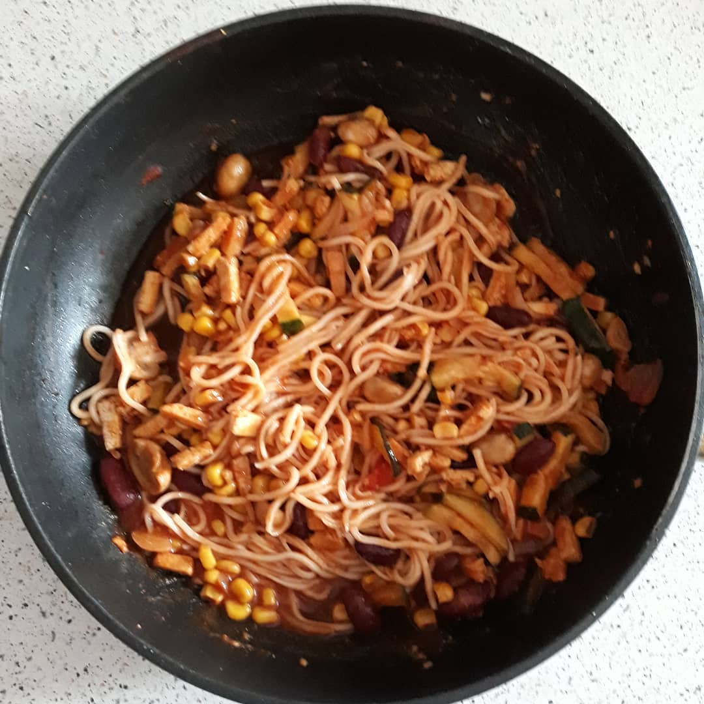

Tofu so zeleninou podľa @zivot_po_60tke — Normy Jedál
Tofu na zelenine: Hranolky z bieleho tofu opražíme doružova. Samostatne opečieme hranolky z cukiny so žampiónmi. Vo výpeku podusíme polovicu cibule a strúčik cesnaku, pridáme cukinu, žampióny, pol konzervy červených fazulí a kukurice, podlejeme 200 g paradajkovým pretlakom a podusíme. Osolíme a okoreníme koreninami podľa vlastného výberu. Na záver primiešame opečené tofu a uvarené dlhé vaječné čínske rezance.
.
.
.
#tofusozeleninou #bieletofu #receptyztofu #receptynaleto #receptysozeleninou #vegetarian #zdravyobed #jedlobezcukru #hlavnejedlo #zdravavecera #rychlyobed #rychlavecera #dnesvarim #dnesjem #dobruchut #mnam #viemcojem